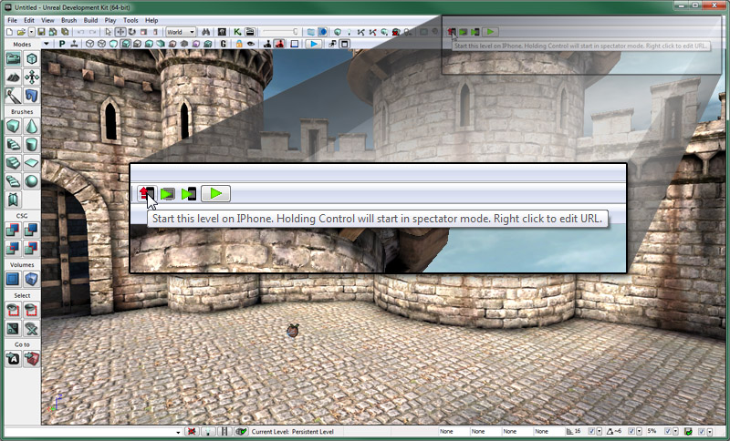
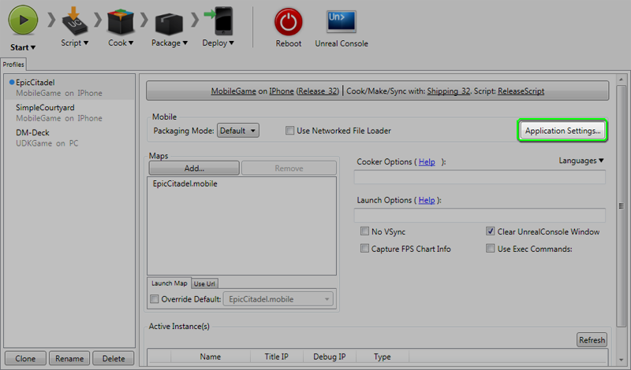
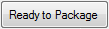
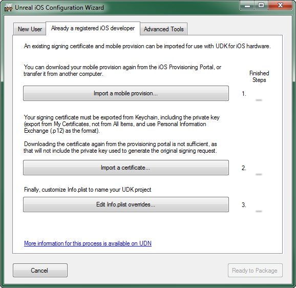
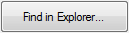
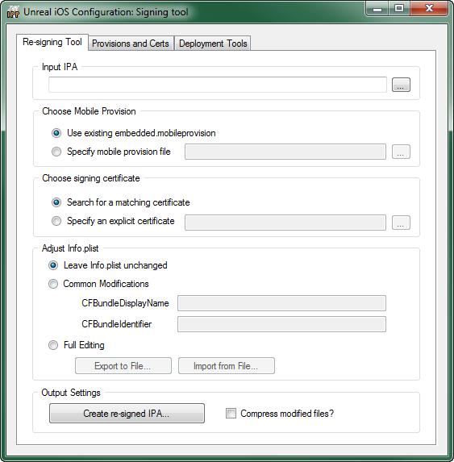
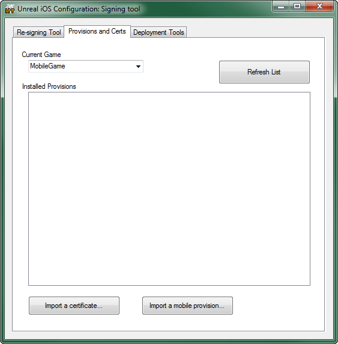
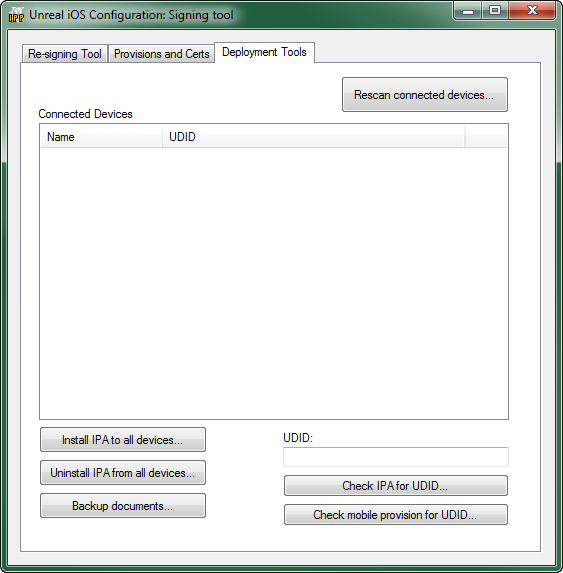

UDN
Search public documentation:
UnrealiPhonePackagerJP
English Translation
中国翻译
한국어
Interested in the Unreal Engine?
Visit the Unreal Technology site.
Looking for jobs and company info?
Check out the Epic games site.
Questions about support via UDN?
Contact the UDN Staff
中国翻译
한국어
Interested in the Unreal Engine?
Visit the Unreal Technology site.
Looking for jobs and company info?
Check out the Epic games site.
Questions about support via UDN?
Contact the UDN Staff
モバイル用ホーム > iOS プロビジョニング概要 > iPhonePackager ツール
iPhonePackager ツール
概要
コマンドライン インターフェース
- iPhonePackager Command GameName Configuration [ switches ] [ RPCCommand ]
- それぞれの引数の意味は次のとおりです。
- Command (コマンド) - このツールの主モードです。
- GameName (ゲーム名) - パッケージされるゲームのディレクトリ名 (例: UDKGame) です。
- Configuration (設定) - パッケージされるゲームのビルド設定です。(例: Debug (デバッグ)、Release (リリース)、Shipping (出荷))。
- [ switches ] (スイッチ)- オプションの引数です。パッケージ化のプロセスにおいてさまざまなことがらを制御するスイッチを、スペースで区切ってリストします。(それぞれ先頭に - をつけます)。
- [ RPCCommand ] (RPC コマンド) - オプションの引数です。ある種のコマンドに使用されます。(特に、RPC やデプロイの場合に)。
- packageapp - パッケージ化するファイルを集めてリモートの Mac に送信し、アプリケーションのディレクトリを作成します。ただし、IPA ファイルを作成したり、PC にファイルをコピーし返したりすることはありません。このモードを使用するには、RPCUtility がリモートの Mac にインストールされていなければなりません。また、このモードでは、Mac 上でデバッグするために Xcode を使用することが想定されています。
- repackageipa - ファイルを集めて IPA ファイルの中にパッケージ化します。ただし、PC 上でローカルに実行します。このモードを使用するには、スタブファイルがあらかじめ packageipa によって作成されていなければなりません。-sign とともに使用することによって、アプリケーションにコード署名することができます。
- packageipa - パッケージ化するファイルを集めてリモートの Mac に送信し、IPA ファイルを作成します。IPA ファイルは送り戻されます。RPCUtility がリモートの Mac にインストールされていなければなりません。-createstub と共に使用することによって、後に repackageipa とともに使用するスタブを作成することができます。(packageipa -createstub が、iPhone を対象としたコンパイル UE3.sln によって使用されるデフォルトのモードです)。
- install - すでに作成済みの IPA ファイルを、ローカルマシン上の接続された iOS すべてにデプロイします。iTunes がインストールされている必要があります。IPA ファイルの名前は、 <GameName> と <Configuration> に基づいて自動的に決められるか、あるいは、明示的なファイル名が追加引数としてコマンドライン上で渡された場合は、それが使われます。(例: iPhonePackager deploy UDKGame Release C:\foo.ipa とすると、<installpath>\Binaries\IPhone\Release-iphoneos\UDKGame\UDKGame.ipa ではなく、 C:\foo.ipa がインストールされます)。
- resigntool - 再署名ツールを直接起動します。
- certrequest - 証明書要求の生成ツールを自動的に起動します。
- gui - 設定ウィザード / ツールのリストを表示します。 Unreal iOS 設定ウィザード のセクションを参照してください。
- -interactive - -sign とともに使用すると、3 つの設定基準が満たされていない場合に設定ウェザードが立ち上がります。
- モバイルプロビジョンが <InstallPath>\<GameName>\Build\IPhone に存在している。
- 一致する署名証明書がインストールされている。
- PList オーバーライドが <InstallPath>\<GameName>\Build\IPhone\<GameName>Overrides.plist に存在している。 設定ウィザードを使用すると、これらのファイルを容易に作成することができるとともに、Apple からプロビジョンと証明書を得るための CSR を作成することができます。
- -verbose
- より詳細 (verbose) な出力が可能になります。パッケージ化などが考慮される個々のファイルをリスト表示します。
- -network
- パッケージ化された IPA ファイルを、ネットワークファイルがロードしている状態で使用するという指定を行います。 (-distribution とは併用できません)。
- -compress=best
- -compress=fast
- -compress=none
- IPA ファイル作成時の圧縮 (compress) レベルを制御します。開発中の場合は -compress=none を使用すると、イタレーションが最速になります (none は「なし」)。PC 上での圧縮時間と iOS デバイス上の解凍時間を節約することができます。App Store への提出を準備する場合は、 -compress=best を使用すると、提出サイズに最適な圧縮が可能となります。
- -distribution
- App Store への配布用にビルドを作成する場合に使用します。署名の身元に関する選択、および出力 IPA の名前 (Distro_GameName.ipa) を制御します。
- -sign
- PC 上でパッケージ化しているときにコード署名を実行します。リモートの Mac 上でパッケージ化している場合は、コード署名が常に実行されます。
- -strip
- 実行ファイルからシンボルを取るか否かについて制御します。Mac 上でリモートのパッケージ化作業を行っている場合にのみ有効となります。
- -createstub
- Mac 上でリモートのパッケージ化作業を行う場合に、すべてのコンテンツをパッケージ化するのか、それとも単に不可欠なコンテンツだけをパッケージ化するのかを制御するとともに、PC 上に戻ってきた .ipa ファイルの名前について制御します (.ipa または .stub)。このオプション引数は、 -distribution との併用はできません。
Unreal iOS 設定ウィザード
Unreal iOS 設定ウィザードへのアクセス
Unreal iOS 設定ウィザードの起動は、エディタ内から、あるいはスタートメニューから、または「Unreal Frontend」から可能です。 初めて iOS デバイスにデプロイする場合は自動的に起動します。その後、内部のデータを修正する場合は、手動で起動してしなければなりません。
初めて iOS デバイスにデプロイする場合は自動的に起動します。その後、内部のデータを修正する場合は、手動で起動してしなければなりません。
エディタ内から起動する
まだiOS プロビジョニングの設定段階であれば、ツールバー内の [ Start this Level on iPhone ] (iPhone 上でこのレベルを開始する) ボタンをクリックすることによって、Unreal iOS 設定ウィザードが立ち上がります。
まずコンソール ウィンドウがいくつか表示され後、設定ウィザードが現れます。スタートメニューから起動する
Windows のスタートメニューにあるショートカットからいつでも Unreal iOS 設定ウィザードを起動することができます。Unreal Development Kit > [お持ちの UDK バージョン] > Tools (ツール) に置かれています。
 このショートカットをクリックすると設定ツールが開きますので、iOS プロビジョニングを初期設定するか、開発中に必要となる場合は更新することができます。
このショートカットをクリックすると設定ツールが開きますので、iOS プロビジョニングを初期設定するか、開発中に必要となる場合は更新することができます。
UFE から起動する
「Unreal Frontend」アプリケーション内から iOS プロビジョニングを直接起動するには、
このボタンをクリックすると設定ツールが開きますので、iOS プロビジョニングを初期設定するか、開発中に必要となる場合は更新することができます。コンフィギュレーション ウィザード インターフェース
Unreal iOS コンフィギュレーション ウィザード インターフェースは、タブの集合体です。各タブに含まれている機能は、プロビジョニングとデプロイのプロセスにおけるさまざまな局面に特化されたものです。 このインターフェースには、常に使用可能なボタンが 2 つ含まれています。| ボタン | 説明 |
|---|---|
 | コンフィギュレーション ウィザードを終了します。パッケージ化プロセスが進行中であっても継続することはありません。 |
|  | コンフィギュレーション ウィザードを終了します。パッケージ化プロセスが進行中であれば継続します。 |
[New User] (新たなユーザー) タブ
[New User] タブには、これまで iOS 用アプリケーションを開発したことがない開発者のためのツールが含まれています。
| ボタン | 説明 |
|---|---|
 | Generate Certificate Request (証明書依頼) ウィンドウ を開きます。 |
 | Apple のデベロッパ ウェブサイトからダウンロードされたプロビジョニング プロファイルをインポートします。 |
 | Apple のデベロッパ ウェブサイトからダウンロードされた開発用証明書と鍵ペアをインポートします。 |
 | Edit Info.plist (Info.plist 編集) ウィンドウ を開きます。 |
[Already a Registered iOS Developer] (すでに登録されている iOS 開発者) タブ
[Already a Registered iOS Developer] (すでに登録されている iOS 開発者) タブには、これまでに iOS 用アプリケーションを (「Unreal」または他の方法によって) 開発したことがあり、開発用証明書とプロビジョニング プロファイルをすでに持っている開発者のためのツールが含まれています。
| ボタン | 説明 |
|---|---|
| | Apple のデベロッパ ウェブサイトからダウンロードされたプロビジョニング プロファイルをインポートします。 |
| | Apple のデベロッパ ウェブサイトから以前にダウンロードされた開発用証明書と鍵ペア、または、キーチェーン アクセスからエクスポートされた .p12 ファイルをインポートします。 |
| | Edit Info.plist (Info.plist 編集) ウィンドウ を開きます。 |
[Advanced Tools] (高度なツール) タブ
[Advanced Tools] (高度なツール) タブには、IPA ファイルへ署名するためのツール、ならびに、IPA ファイルをインストールおよびデプロイするためのツールが含まれています。
| ボタン | 説明 |
|---|---|
 | パッケージ化されたゲーム (IPA) を、接続されているすべての iOS デバイスにインストールします。 |
| 署名ツール の 再署名ツールタブ を開きます。 | |
| 署名ツール の プロビジョンと証明書タブ を開きます。 | |
 | 署名ツール の デプロイ ツール タブ を開きます。 |
ツール ウィンドウ
[Generate Certificate Request] (証明書依頼) ウインドウ
[ Generate Certificate Request ] (証明書依頼) ウィンドウは、iOS アプリケーションに署名するための鍵ペアを生成するとともに、Apple のデベロッパ ウェブサイト上で証明書を作成するために使用される証明書依頼を生成します。
| ステップ | 説明 |
|---|---|
| 電子メールアドレス | Apple iOS デベロッパ アカウントと関連づけられている電子メールアドレスです。 |
| 一般的な名前 | 証明書に関連づけられる名前です。 |
| |
|
| 証明書依頼ファイル (.csr) を生成します。これは、開発用証明書を作成するために、Apple のデベロッパサイトにアップロードされるものです。 |

[Customize Info.plist] (Info.plist をカスタマイズする) ウィンドウ
[ Customize Info.plist ] (Info.plist をカスタマイズする) ウィンドウは、Info.plist ファイルの内容を編集するために使用します。
| 入力フィールド | 説明 |
|---|---|
| Bundle Display Name | (バンドル表示名) iOS デバイスのホームスクリーン上に置かれるアプリケーションのアイコンのすぐ下に表示される名称です。この名称は、コンパクトなものにして、割り当てられたスペース内に収まりカットされないようにしてください。 (例: UDN iOS Game) |
| Bundle Name | (バンドル名) アプリケーションを識別するために利用される圧縮された名称です。文字数は 16 文字未満でなければなりません。 (例: UDNiOSGame) |
| Bundle Identifier | (バンドル識別子) Apple のデベロッパ ウェブサイトで既に作成している App ID のバンドル識別子と一致しなければなりません。 (例: com.EpicGames.UDNiOSGame) |
| ボタン | 説明 |
|---|---|
|  | ファイルエクスプローラを開き、Info.plist ファイルを表示します。これによって、ファイルを開き手動で編集することができるようになります。 |
 | 上記入力フィールドの情報を Info.plist ファイルに保存します。 |
署名ツール
署名ツールは、特化した機能をもつタブの集合体です。以下でタブと機能について解説します。再署名ツール
[ 再署名ツール ] タブを使用することによって、パッケージ化された特定のゲーム (IPA ファイル) のプロビジョニング プロファイルまたは証明書、Info.plist を素早く簡単に編集することができます。
Input IPA (入力 IPA)- 再署名する入力パッケージ化済みゲームファイルを設定します。
- Use existing embedded.mobileprovision (既存のエンベッドされたモバイル プロビジョンを使用する) - IPA と関連づけられているプロビジョン プロファイルを修正しません。
- Specify mobile provision file (モバイル プロビジョン ファイルを指定する) - 現在のプロビジョニング プロファイルと置き換えるプロビジョン プロファイルを設定します。
- Search for a matching certificate (一致する証明書を検索する) - IPA の署名に使用されていた証明書と一致するインストール済み証明書を検索するとともに、それを使用して IPA に再署名します。
- Specify an explicit certificate (明示的な証明書の指定) - 現在の証明書と置き換える証明書を設定します。
- Leave Info.plist unchanged (Info.plist を変更しないままにする) - IPA の現在の Info.plist にまったく修正を加えません。
- Common Modifications (一般的な修正) - Info.plist の最も一般的な要素を置き換えることができるようになります。
- CFBundleDisplayName - 現在のバンドル表示名と置き換えるために使用する文字列を設定します。
- CFBundleIdentifier - 現在のバンドル識別子と置き換えるために使用する文字列を設定します。
- Full Editing (フルに編集) - IPA の Info.plist をエクスポートするとともに手動で編集し、再インポートできるようになります。
ボタン 説明 
IPA の現在の Info.plist をファイルにエクスポートすることによって、手動で編集できるようになります。 IPA の現在の Info.plist と置き換える Info.plist ファイルをインポートします。
- *Compress Modified files? * (編集したファイルを圧縮しますか?) - ここにチェックを入れると、編集したファイルが圧縮されます。
| ボタン | 説明 |
|---|---|
 | 入力 IPA を使用して指定された変更を実行することによって、再署名 IPA を作成します。 |
Provisions and Certs (プロビジョンと証明書)
[ Provisions and Certs ] (プロビジョンと証明書) タブは、現在インストールされているプロビジョニング プロファイルと証明書を表示するとともに、追加のプロビジョニング プロファイルと証明書をインポートします。
| ボタン | 説明 |
|---|---|
 | Installed Provisions リストをリフレッシュします。新たにインストールされたプロビジョンと証明書は、リストがリフレッシュされるまで表示されません。 |
 | 新たな証明書をインポートおよびインストールします。 |
 | 新たなプロビジョニング プロファイルをインポートおよびインストールします。 |
Deployment Tools (デプロイ ツール)

| ボタン | 説明 |
|---|---|
 | 接続されている iOS デバイスを再スキャンするとともに、 Connected Devfices (接続されているデバイス) リストに追加します。 |
| 接続されているすべてのデバイスに IPA をインストールします。アプリケーションがすでにデバイス上で動いている場合は、インストールが完了する前に終了します。ただし、デバイスが待機状態にある場合 (3D アプリケーションが動いていない状態など)、インストールが速やかに進行します。 | |
| 接続されているすべてのデバイスから IPA をアンインストールします。 | |
 | このコマンドによって、Documentsディレクトリにあるすべてのファイルのバックアップが取られます。バックアップ先は、 [install path]\[GameName]\iOS_Backups\[DeviceName] です。なお、
|
 | 入力されたデバイス ID が IPA と関連づけられているかどうかを調べます。 |
| 入力されたデバイス ID がモバイル プロビジョンと関連づけられているかどうかを調べます。 |
-
/binaries/iPhone/にある IPP.exe を開きます。 - [Deployment Tools] (デプロイ ツール) タブにおいて、デバイスを選択し、Backup Documents (ドキュメントのバックアップ) をクリックします。
- デバイスで使用した IPA に進みます。(たとえば、Release UDKGame をクックした場合は
\Binaries\IPhone\Release-iphoneos\MobileGam\UDKGame.ipa)。 - ファイルは、
\UnrealEngine3\UDKGame\iOS_Backups\に保存されることになります。 - GameplayProfiler.exe によってそのファイルを開くことができます。